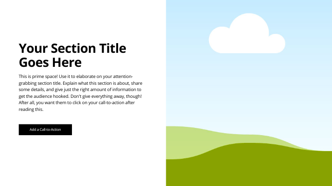
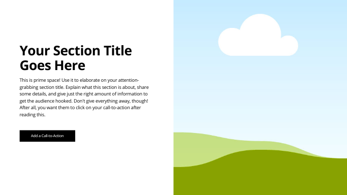
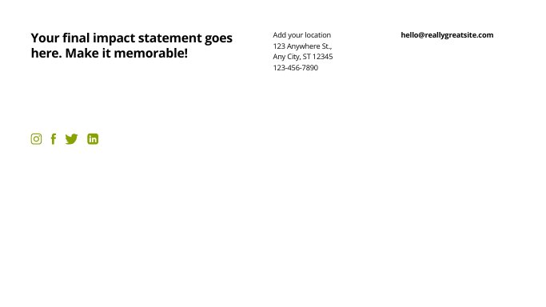
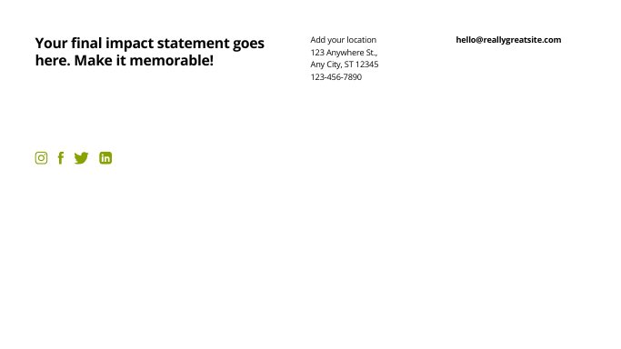
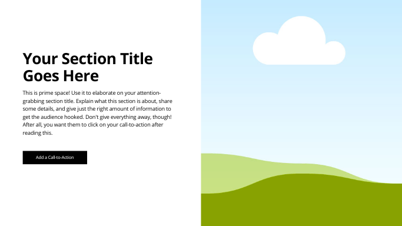
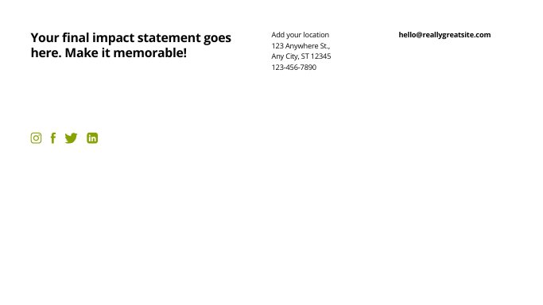

Wireframe:

 

 

This question will help drive content related to popular landmarks, cultural spots, and must-see attractions in Panama City, including descriptions, images, and recommendations based on visitor preferences.
This scenario will guide content about Panama’s beautiful beaches, nature reserves, and outdoor activities such as hiking, snorkeling, and wildlife tours, catering to adventure seekers and nature enthusiasts.
The color schema for this site includes two main colors:
/* CSS HSL */
--black: hsla(0, 0%, 0%, 1);
--eerie-black: hsla(120, 7%, 11%, 1);
--caribbean-current: hsla(182, 100%, 23%, 1);
--light-sea-green: hsla(175, 87%, 40%, 1);
--hookers-green: hsla(173, 14%, 48%, 1);
--floral-white: hsla(47, 43%, 96%, 1);
--white: hsla(0, 0%, 100%, 1);

